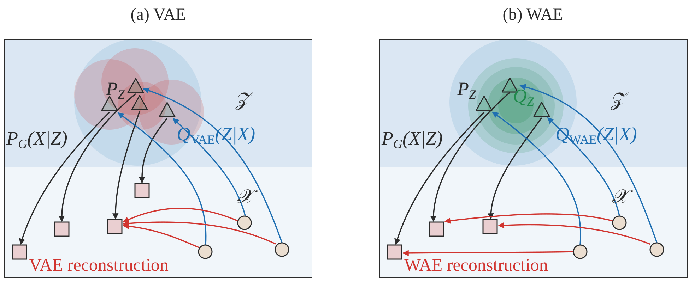
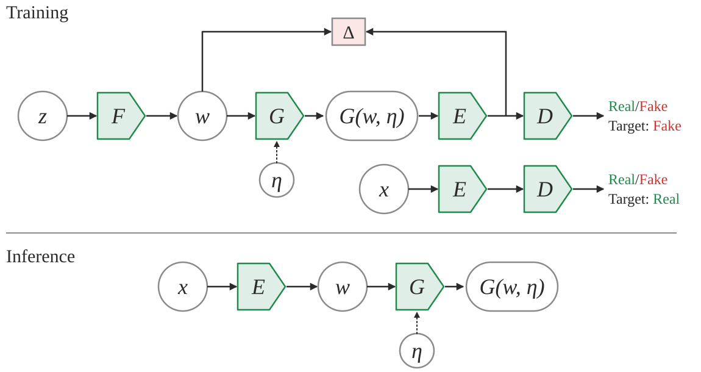
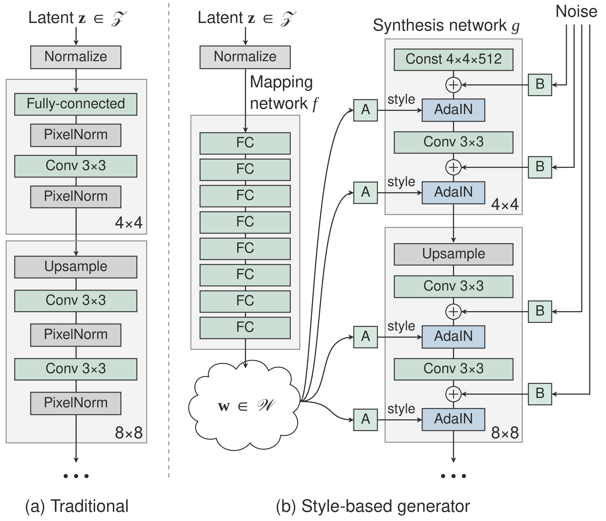
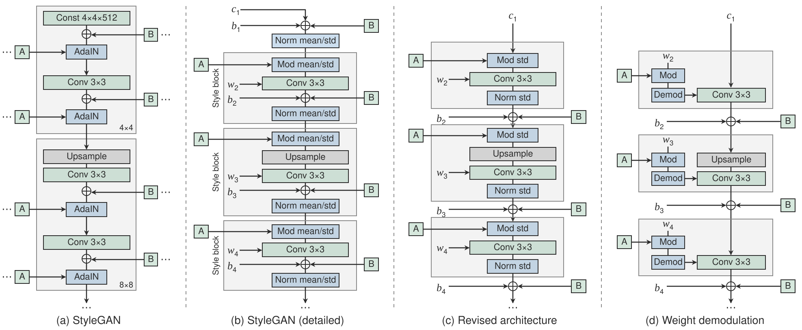
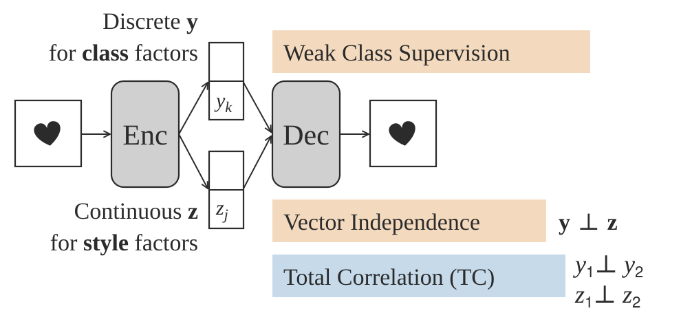
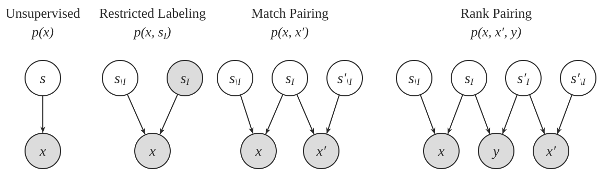

Disentanglement#
Some papers on learning disentangled representations with VAEs, GANs, and other methods.
About this chapter
A disentangled representation is one where each latent dimension tracks one factor of variation in the data, such as color or rotation. The page starts with VAEs, because their loss splits cleanly into three terms (reconstruction, compactness prior and total correlation), and most variants (beta-VAE, factor-VAE, beta-TC-VAE) change how those terms are weighted or estimated. Read the loss table first; the rest of the VAE section refers back to it by color.
GANs come next, split into models built to disentangle during training (InfoGAN, StyleGAN, the Hessian penalty) and methods that find meaningful directions in a trained generator’s latent space. Then come methods that use some labels or pairs, metrics for scoring disentanglement, and ICA as the non-deep starting point. One result from the evaluation section applies to all of it: unsupervised disentanglement is impossible without inductive biases, and results depend heavily on architecture and hyperparameters.
Chapter outline: 6 sections
- VAEs1 interactive2 figuresThe encoder maps \mathbf x to a distribution over codes \mathbf z, a code is sampled, and the decoder maps it back.
- GANs2 figuresA GAN has no encoder, so the questions change: can the generator be built so its inputs are disentangled, and if not, can directions in the latent space of a trained generator be found that change one attribute at a time?
- MiscTwo entries outside the VAE and GAN families.
- (semi)-supervised disentanglement2 figuresSince unsupervised disentanglement needs inductive biases anyway, these papers add weak supervision: labels for some factors, pairs that share a factor, or pairs ranked by a factor.
- Evaluating disentanglementMetrics need datasets with known generative factors, like dSprites.
- Non-deep methodsICA is the classic non-deep version: find components z that are as non-Gaussian as possible.
VAEs#
The encoder maps \(\mathbf x\) to a distribution over codes \(\mathbf z\), a code is sampled, and the decoder maps it back. Disentanglement work keeps this setup and changes the loss.
Some good disentangled VAE implementations are here and more general VAE implementations are here. Tensorflow implementations available here
The goal is to obtain a nice latent representation \(\mathbf z\) for our inputs \(\mathbf x\). To do this, we learn parameters \(\phi\) for the encoder \(p_\phi( \mathbf z\vert \mathbf x)\) and \(\theta\) for the decoder \(q_{\mathbf \theta} ( \mathbf x\vert \mathbf z)\). We do this with the standard vae setup, whereby a code \(z\) is sampled, using the output of the encoder (intro to VAEs here).
Disentangled vae losses#
Each column of the table is one term of the loss. The compactness prior term can itself be split into a mutual information term and a factorial prior term, and the total correlation term is the one that pushes latent dimensions to be independent.
reconstruction loss |
compactness prior loss |
total correlation loss |
|---|---|---|
encourages accurate reconstruction of the input |
encourages points to be compactly placed in space |
encourages latent variables to be independent |
summarizing the losses
reconstruction loss - measures the quality of the reconstruction, the form of the loss changes based on the assumed distribution of the likelihood of each pixel
binary cross entropy loss - corresopnds to bernoulli distr., most common - doesn’t penalize (0.1, 0.2) and (0.4, 0.5) the same way, which might be problematic
mse loss - gaussian distr. - tends to focus on a fex pixels that are very wrong
l1 loss - laplace distr.
compactness prior loss
doesn’t use the extra injected latent noise
tries to push all the points to the same place
emphasises smoothness of z, using as few dimensions of z as possible, and the main axes of z to capture most of the data variability
usually assume prior is standard normal, resulting in pushing the code means to 0 and code variance to 1
we can again split this term \(\sum_i \corange{\underbrace{\text{KL} \left(p_\phi( \mathbf z_i\vert \mathbf x)\:\vert\vert\:prior(\mathbf z_i) \right)}_{\text{compactness prior loss}}} = \cpurple{\underbrace{\sum_i I(x; z)}_{\text{mutual info}}} + \cpink{\underbrace{\text{KL} \left(p_\phi( \mathbf z_i)\:\vert\vert\:prior(\mathbf z_i) \right)}_{\text{factorial prior loss}}}\)
(see factor-vae paper for proof (kim & mnih 2018))
total correlation loss - encourages factors to be independent
measures dependence between marginals of the latent vars
intractable (requires pass through the whole dset)
instead sample \(dec_\phi(\mathbf z\vert \mathbf x)\) and create \(\prod_j dec_\phi( \mathbf z_i\vert \mathbf x) \) by permuting across the batch dimension
now, calculate the kl with the density-ratio trick - train a classifier to approximate the ratio from these terms
Disentangled vae in code#
A sketch of the same losses in PyTorch. The returned value is the beta-VAE loss; the mutual information, total correlation and dimension-wise KL terms show how beta-TC-VAE splits the KL.
# Reconstruction + KL divergence losses summed over all elements and batch
def loss_function(x_reconstructed, x, mu, logvar, beta=1):
'''
Params
------
x_reconstructed: torch.Tensor
Reconstructed input, with values between 0-1
x: torch.Tensor
input, values unrestricted
'''
# reconstruction loss (assuming bernoulli distr.)
# BCE = sum_i [x_rec_i * log(x_i) + (1 - x_rec_i) * log(1-x_i)]
rec_loss = F.binary_cross_entropy(x_reconstructed, x, reduction='sum')
# compactness prior loss
# 0.5 * sum(1 + log(sigma^2) - mu^2 - sigma^2)
KLD = -0.5 * torch.sum(1 + logvar - mu.pow(2) - logvar.exp())
# total correlation loss (calculate tc-vae way)
z_sample = mu + torch.randn_like(exp(0.5 * logvar))
log_pz, log_qz, log_prod_qzi, log_q_zCx = func(z_sample, mu, logvar)
# I[z;x] = KL[q(z,x)\vert\vertq(x)q(z)] = E_x[KL[q(z\vertx)\vert\vertq(z)]]
mi_loss = (log_q_zCx - log_qz).mean()
# TC[z] = KL[q(z)\vert\vert\prod_i z_i]
tc_loss = (log_qz - log_prod_qzi).mean()
# dw_kl_loss is KL[q(z)\vert\vertp(z)] instead of usual KL[q(z\vertx)\vert\vertp(z))]
dw_kl_loss = (log_prod_qzi - log_pz).mean()
return rec_loss + beta * KLD
VAEs for interpretation#
icam (bass et al. 2020) - learn disentangled repr using vae with adv loss to make repr class-relevant
va-gan (baumgartner et al. 2018) - interpret features in GAN space
Various vaes#
Mostly variations on the loss above: a weight on the compactness term (beta-VAE), an explicit total correlation term (factor-VAE, beta-TC-VAE), or a different distance between distributions (WAE). Later entries change the prior or add new objectives, such as the SNE term in VAE-SNE.
vae (kingma & welling, 2013)
beta-vae (higgins et al. 2017) - add hyperparameter \(\beta\) to weight the compactness prior term
beta-vae H (burgess et al. 2018) - add parameter \(C\) to control the contribution of the compactness prior term
\(\overbrace{\mathbb E_{p_\phi(\mathbf z\vert \mathbf x)}}^{\text{samples}} [ \cblue{\underbrace{-\log q_{\mathbf \theta} ( \mathbf x\vert \mathbf z)}_{\text{reconstruction loss}}} ] + \textcolor{var(--nb-c-green)}{\beta}\; \vert\sum_i \corange{\underbrace{\text{KL} \left(p_\phi( \mathbf z_i\vert \mathbf x)\:\vert\vert\:prior(\mathbf z_i) \right)}_{\text{compactness prior loss}}} -C\vert\)
C is gradually increased from zero (allowing for a larger compactness prior loss) until good quality reconstruction is achieved
factor-vae (kim & minh 2018) - adds total correlation loss term
computes total correlation loss term using discriminator (can we discriminate between the samples when we shuffle over the batch dimension or not?)
beta-TC-VAE = beta-total-correlation VAE (chen et al. 2018) - same objective but computed without need for discriminator
use minibatch-weighted sampling to compute each of the 3 terms that make up the original VAE compactness prior loss
main idea is to better approximate \(q(z)\) by weighting samples appropriately - biased, but easier to compute
Interpretable VAEs for nonlinear group factor analysis (ainsworth et al. 2018)
Wasserstein Auto-Encoders (tolstikhin et al.) - removes the mutual info part of the loss
wasserstein distance = earth-movers distance, how far apart are 2 distrs
minimizes wasserstein distance + penalty which is similar to auto-encoding penalty, without the mutual info term
another intuition: rather than map each point to a ball (since VAE adds noise to each latent repr), we only constraint the overall distr of Z, potentially making reconstructions less blurry (but potentially making latent space less smooth)

Fig. 189 Figure 1. VAE (a) vs WAE (b). The VAE pushes each encoded point’s own distribution (red discs) to match the prior P_Z. The WAE only matches the overall distribution of codes Q_Z (green) to the prior, which can make reconstructions less blurry.#
Adversarial Latent Autoencoder (pidhorskyi et al. 2020)
improve quality of generated VAE reconstructions by using a different setup which allows for using a GAN loss

Fig. 190 Figure 2. Adversarial Latent Autoencoder. The discriminator works on latent codes produced by the encoder E, so a GAN loss and an autoencoder loss (Δ between w and E’s output) can be trained together.#
Variational Autoencoders Pursue PCA Directions (by Accident) (rolinek et al. 2018)
local orthogonality of the embedding transformation
prior \(p(z)\) is standard normal, so encoder is assumed to be Gaussian with a certain mean, and diagonal covariance
disentanglement is sensitive to rotations of the latent embeddings but reconstruction err doesn’t care
for linear autoencoder w/ square-error as reconstruction loss, we recover PCA decomp
Disentangling Disentanglement in Variational Autoencoders (2019)
independence can be too simplistic, instead 2 things:
the latent encodings of data having an appropriate level of overlap
keeps encodings from just being a lookup table
when encoder is unimodal, \(I(x; z)\) gives us a good handle on this
prior structure on the latents (e.g. independence, sparsity)
to trade these off, can penalize divergence between \(q_\phi(z)\) and \(p(z)\)
nonisotropic priors - isotropic priors are only good up to rotation in the latent space
by chossing a nonisotropic prior (e.g. nonisotropic gaussian), can learn certain directions more easily
sparse prior - can help do clustering
VAE-SNE: a deep generative model for simultaneous dimensionality reduction and clustering (graving & couzin 2020) - reduce dims + cluster without specifying number of clusters
objective
\[\begin{split} \begin{aligned} \underset{\boldsymbol\theta,\boldsymbol\phi}{\arg\min}\; -\text{SNELBO}(\mathbf X,\boldsymbol\theta,\boldsymbol\phi) &= \underset{\boldsymbol\theta,\boldsymbol\phi}{\arg\min}\; -\frac{1}{N}\sum_i \text{ELBO}_i(\mathbf x_i,\boldsymbol\theta,\boldsymbol\phi) - \alpha\, \text{SNE}_i(\mathbf X,\boldsymbol\phi) \\ \text{ELBO}_i(\mathbf x_i,\boldsymbol\theta,\boldsymbol\phi) &= \gamma\, \mathbb E_{\mathbf z_i\sim q_{\boldsymbol\phi}(\mathbf z \vert \mathbf x_i)} \underbrace{\left[\log p_{\boldsymbol\theta}(\mathbf x_i \vert \mathbf z_i)\right]}_{\text{distortion}} - \beta\, \underbrace{\mathbb{KL}\left[q_{\boldsymbol\phi}(\mathbf z \vert \mathbf x_i) \,\Vert\, p_{\boldsymbol\theta}(\mathbf z)\right]}_{\text{rate}} \\ \text{SNE}_i(\mathbf X,\boldsymbol\phi) &= \mathbb E_{\substack{\mathbf z_i\sim q_{\boldsymbol\phi}(\mathbf z \vert \mathbf x_i) \\ \mathbf z_j\sim q_{\boldsymbol\phi}(\mathbf z \vert \mathbf x_j)}} \left[\sum_j \text{SNE}_{j \vert i}(\mathbf x_i,\mathbf x_j,\boldsymbol\phi)\right] \\ &= \mathbb E_{\substack{\mathbf z_i\sim q_{\boldsymbol\phi}(\mathbf z \vert \mathbf x_i) \\ \mathbf z_j\sim q_{\boldsymbol\phi}(\mathbf z \vert \mathbf x_j)}} \underbrace{\left[\sum_j \mathbb{KL}\Big[\overbrace{p(\mathbf x_j \vert \mathbf x_i)}^{\text{dist in original space}} \,\Big\Vert\, \underbrace{q_{\boldsymbol\phi}(\mathbf z_j \vert \mathbf z_i)}_{\text{dist in latent space}}\Big]\right]}_{\text{pairwise similarity}} \end{aligned} \end{split}\]stochastic neighbor regularizer that optimizes pairwise similarity kernels between original and latent distrs. to strengthen local neighborhood preservation
can use different neighbor kernels, e.g. t-SNE similarity (van der Maaten & Hinton, 2008) or Gaussian SNE kernel (Hinton & Roweis, 2003)
perplexity annealing technique (Kobak and Berens, 2019) - decay the size of local neighborhoods during training (helps to preserve structure at multiple scales)
Gaussian mixture prior for learning latent distr. (with very large number of clusters)
at the end, merge clusters using a sparse watershed (see todd et al. 2017)
extensive evaluation - test several datasets / methods and evaluate how well the first 2 dimensions preserve the following:
global - correlation between pairwise distances in orig/latent spaces
local - both metric (distance- or radius-based) and topological (neighbor-based) neighborhoods which are 1% of total embedding size
fine-scale - neighborhoods which are <1% of total embedding size
temporal info (for time-series data only) - correlation between latent and original temporal derivatives
likelihood on out-of-sample data
further advancements
embed into polar coordinates (rather than Euclidean) helps a lot
convolutional VAE-SNE - extract features from images using some pre-trained net and then run VAE-SNE on these features
background: earlier works also used SNE objective for regularization - starts with van der Maaten 2009 (parametric t-SNE)
future work: density-preserving versions of t-SNE, modeling hierarchical structure in vae, conditional t-SNE kernel
A Survey of Inductive Biases for Factorial Representation-Learning (ridgeway 2016)
desiderata
compact
faithful - preserve info required for task
explicitly represent the attributes required for the task at hand
interpretable by humans
factorial representation - attributes are statistically independent and can provide a userful bias for learning
“compete” - factors are more orthogonal
“cooperate” - factors are more similar
bias on distribution of factors
PCA - minimize reconstruction err. subject to orthogonal weights
ICA - maximize non-Gaussianity (can also have sparse ICA)
bias on factors being invariant to certain types of changes
ISA (independent subspace analysis) - 2 layer model where first layer is linear, 2nd layer pools first layer (not maxpool, more like avgpool), sparsity at second layer
i.e. 1st layer cooperates, 2nd layer competes
VQ - vector quantizer - like ISA but first layer filters now compete and 2nd layer cooperates
SOM - encourages topographic map by enforcing nearby filters to be similar
bias in how factors are combined
linear combination - PCA/ICA
multilinear models - multiplicative interactions between factors (e.g on top of ISA)
functional parts - factor components are combined to construct the output
ex. NMF - parts can only add, not substract to total output
ex. have each pixel in the output be represented by only one factor in a VQ
hierarchical layers
ex. R-ICA - recursive ICA - run ICA on coefficients from previous layer (after some transformation)
supervision bias
constraints on some examples
e.g. some groups have same value for a factor
e.g. some examples have similar distances (basis for MDS = multidimensional scaling)
e.g. analogies between examples
can do all of these things with auto-encoders
more papers
vq-vae - latent var is discrete, prior is learned
Learning Disentangled Representations with Semi-Supervised Deep Generative Models
specify graph structure for some of the vars and learn the rest


GANs#
A GAN has no encoder, so the questions change: can the generator be built so its inputs are disentangled, and if not, can directions in the latent space of a trained generator be found that change one attribute at a time?
Model-based (disentangle during training)#
These change the architecture or loss. InfoGAN maximizes mutual information between a subset of latent codes and the image; StyleGAN maps \(z\) to an intermediate style space \(w\) that feeds every layer.
disentangling architectures
InfoGAN: Interpretable Representation Learning by Information Maximizing Generative Adversarial Nets (chen et al. 2016)
encourages \(I(x; c)\) to be high for a subset of the latent variables \(z\)
slightly different than vae - defined under the distribution \(p(c) p(x\vert c)\) whereas vae uses \(p_{data}(x)enc(z\vert x)\)
mutual info is intractable so optimizes a lower bound
Stylegan (karras et al. 2018)
introduced perceptual path length and linear separability to measure the disentanglement property of latent space

Fig. 191 Figure 3. A traditional generator (a) feeds z into the first layer. StyleGAN (b) first maps z to w with a mapping network, then injects w as a style (A, via AdaIN) and per-layer noise (B) at every resolution, starting from a learned constant.#
Stylegan2 (karras et al. 2019)

Fig. 192 Figure 4. From StyleGAN (a, b) to StyleGAN2 (c, d): only the standard deviation is modulated, bias and noise move outside the style block, and AdaIN is replaced by modulating and demodulating the conv weights directly.#
\(\psi\) scales the deviation of w from the average - \(\psi=1\) is original, moving towards 0 improves quality but reduces variety
also has jacobian penalty on mapping from style space \(w\) to output image \(y\)
DNA-GAN: Learning Disentangled Representations from Multi-Attribute Images (xiao et al. 2017)
Clustering by Directly Disentangling Latent Space (ding et al. 2019) - clustering in the latent space of a gan
Semi-Supervised StyleGAN for Disentanglement Learning (nie et al. 2020) - further improvements on StyleGAN using labels in the training data
The Hessian Penalty: A Weak Prior for Unsupervised Disentanglement (peebles et al. 2020)
if we perturb a single component of a network’s input, then we would like the change in the output to be independent of the other input components
minimize off-diagonal entries of Hessian matrix (can be obtained with finite differences)
smoother + more disentangled + shrinkage in latent space
Hessian penalty is for a scalar - they define penalty as max penalty over Hessian over all pixels in the generator
unbiased stochastic estimator for the Hessian penalty (Hutchinson estimator)
they apply this penalty with \(z\) as input, but different intermediate activations as output


Post-hoc (disentangle after training)#
These leave the generator fixed. Most find a direction in latent space for each attribute, for example with a linear classifier, PCA or clustering, then move along it to edit images or to probe a classifier for bias.
mapping latent space
InterFaceGAN: Interpreting the Disentangled Face Representation Learned by GANs (shen et al. 2020)
Interpreting the Latent Space of GANs for Semantic Face Editing (shen et al. 2020)
find latent directions for each binary attribute, as directions which separate the classes using linear svm
validation accuracies in tab 1 are high…much higher for all data (because they have high confidence level on attribute scores maybe) - for PGGAN but not StyleGAN
intro of this paper gives good survey of how people have studied GAN latent space
few papers posthoc analyze learned latent repr.
On the “steerability” of generative adversarial networks (jahanian et al. 2020)
learn to approximate edits to images, such as zooms
linear walk is as effective as more complex non-linear walks for learning this
nonlinear setting - learn a neural network which applies a small perturbation in a specific direction (e.g. zooming)
to move further in this space, repeatedly apply the function
A Disentangling Invertible Interpretation Network for Explaining Latent Representations (esser et al. 2020) - map latent space to interpretable space, with invertible neural network
interpretable space factorizes, so is disentangled
individual concepts (e.g. color) can use multiple interpretable latent dims
instead of user-supplied interpretable concepts, user supplies two sketches which demonstrate a change in a concept - these sketches are used w/ style transfer to create data points which describe the concept
alternatively, with no user-supplied concepts, try to get independent components in unsupervised way
Disentangling in Latent Space by Harnessing a Pretrained Generator (nitzan et al. 2020)
learn to map attributes onto latent space of stylegan
works using two images at a time and 2 encoders
for each image, predict attributes + identity, then mix the attributes
results look realy good, but can’t vary one attribute at a time (have to transfer all attributes from the new image)
ELEGANT: Exchanging Latent Encodings with GAN for Transferring Multiple Face Attributes (xiao et al. 2018)
trains 2 images at a time - swap an attribute that differs between the images and reconstruct images that have the transferred attribute
bias
Towards causal benchmarking of bias in computer vision algorithms (balakrishnan et al. 2020) - use human annotations to disentangle latent space
synthesis approach can alter multiple attributes at a time to produce grid-like matched samples of images we call transects
find directions + orthogonalize same as shen et al. 2020
Detecting Bias with Generative Counterfactual Face Attribute Augmentation (denton et al. 2019) - identify latent dims by training a classifier in the latent space on groundtruth attributes of the training images
Explaining Classifiers with Causal Concept Effect (CaCE) (goyal et al. 2020) - use vae to disentangle / alter concepts to probe classifier
post-hoc
Explanation by Progressive Exaggeration (singla et al. 2019)
progressively change image to negate the prediction, keeping most features fixed
want to learn mapping \(I(x, \delta)\) which produces realistic image that changes features by \(\delta\)
3 losses: data consistency (perturbed samples should look real), prediction changes (perturbed samples should appropriately alter prediction), self-consistency (applying reverse perturbatino should bring x back to original, and \(\delta=0\) should return identity)
moving finds ways to generate images that do change the wanted attribute (and don’t change the others too much)
minor
used human experiments
limited to binary classification
Interpreting Deep Visual Representations via Network Dissection (zhou et al. 2017)
obtain image attributes for each z (using classifier, not human labels)
this classifier may put bias back in
to find directions representing an attribute, train a linear model to predict it from z
GAN Dissection: Visualizing and Understanding Generative Adversarial Networks (bau et al. 2018) - identify group of interpretable units based on segmentation of training images
find directions which allow for altering the attributes
GANSpace: Discovering Interpretable GAN Controls (härkönen et al. 2020) - use PCA in the latent space (w for styleGAN, activation-space at a specific layer for BigGAN) to select directions
Editing in Style: Uncovering the Local Semantics of GANs (collins et al. 2020) - use k-means on gan activations to find meaningful clusters (with quick human annotation)
add style transfer using target/source image
Unsupervised Discovery of Interpretable Directions in the GAN Latent Space (voynov & babenko 2020) - loss function which tries to recover random shifts made to the latent space
Misc#
Two entries outside the VAE and GAN families. Maximal coding rate reduction replaces cross-entropy with a rate-distortion objective: features of different classes should span different low-dimensional subspaces, and features within a class should be compressible. The second separates foreground from background using video.
Learning Diverse and Discriminative Representations via the Principle of Maximal Coding Rate Reduction (yu, …, & ma, 2020)
goal: learn low-dimensional structure from high-dim (labeled or unlabeled) data
approach: instead of cross-entropy loss, use maximal coding rate reduction = MCR loss function to learn linear feature space where:
inter-class discriminative - features of samples from different classes/clusters are uncorrelated + different low-dim linear subspaces
intra-class compressible - features of samples from same class/cluster are correlated (i.e. belong to low-dim linear subspace)
maximally diverse - dimension (or variance) of features for each class/cluster should be as large as possible as long as uncorrelated from other classes/clusters
related to nonlinear generalized PCA
given random variable \(z\) and precision \(\epsilon\), rate distortion \(R(z, \epsilon)\) is minimal number of bits to encode \(z\) such that expected decoding err is less than \(\epsilon\)
can compute from finite samples
can compute for each class (diagonal matrices represent class/cluster membership in loss function)
MCR maximizes (rate distortion for all features) - (rate distortion for all data separated into classes)
like a generalization of information gain
evaluation
with label corruption performs better
Learned Equivariant Rendering without Transformation Supervision (resnick et al. 2020) - separate foreground / background using video
(semi)-supervised disentanglement#
Since unsupervised disentanglement needs inductive biases anyway, these papers add weak supervision: labels for some factors, pairs that share a factor, or pairs ranked by a factor.
these papers use some form of supervision for the latent space when disentangling
Semi-supervised Disentanglement with Independent Vector Variational Autoencoders (kim et al. 2020)

Fig. 193 Figure 5. The encoder splits the code into a discrete vector y for class factors, trained with weak supervision, and a continuous vector z for style. The loss keeps y and z independent of each other, and keeps the elements within each one independent (total correlation).#
Learning Disentangled Representations with Semi-Supervised Deep Generative Models (siddharth et al. 2017) - put priors on interpretable variables during training and learn the rest
Weakly Supervised Disentanglement with Guarantees (shu et al. 2019)
prove results on disentanglement for rank pairing
different types of available supervision

Fig. 194 Figure 6. The kinds of supervision as graphical models (shaded = observed): none, labels for some factors s_I (restricted labeling), pairs that share s_I (match pairing), and pairs with a label y comparing s_I (rank pairing).#
restricted labeling - given labels for some groundtruth factors (e.g. label “glasses”, “gender” for all images)
match pairing - given pairs or groups (e.g. these images all have glasses)
rank pairing - label whether a feature is greater than another (e.g. this image has darker skin tone than this one)
Weakly Supervised Disentanglement by Pairwise Similarities (chen & batmanghelich 2019) - use pairwise supervision


Evaluating disentanglement#
Metrics need datasets with known generative factors, like dSprites. They differ in what they check: that one latent dimension changes when one factor changes, or that one factor can be read off from one latent dimension.
Challenging Common Assumptions in the Unsupervised Learning of Disentangled Representations (locatello et al. 2019)
state of disentanglement is very poor…depends a lot on architecture/hyperparameters
good way to evaluate: make explicit inductive biases, investigate benefits of this disentanglement
defining disentanglement - compact, interpretable, independent, helpful for downstream tasks, causal inference
a change in one factor of variation should lead to a change in a single factor in the learned repr.
unsupervised learning of disentangled reprs. is impossible without inductive biases
note - vae’s come with reconstruction loss + compactness prior loss which can be looked at on their own
data
dsprites dataset has known latent factors we try to recover
beta-vae disentanglement metric score = higgins metric - see if we can capture known disentangled repr. using pairs of things where only one thing changes
start with a known generative model that has an observed set of independent and interpretable factors (e.g. scale, color, etc.) that can be used to simulate data.
create a dataset comprised of pairs of generated data for which a single factor is held constant (e.g. a pair of images which have objects with the same color).
use the inference network to map each pair of images to a pair of latent variables.
train a linear classifier to predict which interpretable factor was held constant based on the latent representations. The accuracy of this predictor is the disentanglement metric score.
Evaluating Disentangled Representations (sepliarskaia et al. 2019)
defn 1 (Higgins et al., 2017; Kim and Mnih, 2018; Eastwood and Williams, 2018) = factorVAE metric: A disentangled representation is a representation where a change in one latent dimension corresponds to a change in one generative factor while being relatively invariant to changes in other generative factors.
defn 2 (Locatello et al., 2018; Kumar et al., 2017): A disentangled representation is a representation where a change in a single generative factor leads to a change in a single factor in the learned representation.
metrics
DCI: Eastwood and Williams (2018) - informativeness based on predicting gt factors using latent factors
SAP: Kumar et al. (2017) - how much does top latent factor match gt more than 2nd latent factor
mutual info gap MIG: Chen et al. 2018 - mutual info to compute the same thing
modularity (ridgeway & mozer, 2018) - if each dimension of r(x) depends on at most a factor of variation using their mutual info
Non-deep methods#
ICA is the classic non-deep version: find components \(z\) that are as non-Gaussian as possible. The entry connects it to VAEs through nonlinear ICA.
unifying vae and nonlinear ica (khemakhem et al. 2020)
ICA
maximize non-gaussianity of \(z\) - use kurtosis, negentropy
minimize mutual info between components of \(z\) - use KL, max entropyd
Key ideas
Most disentangled VAEs change how the loss weights or estimates three terms, reconstruction, the compactness prior and total correlation.
Raising the weight \(\beta\) on the compactness term trades reconstruction quality for a code that uses fewer latent dimensions.
GAN work splits into generators built to disentangle during training and methods that find attribute directions in a trained generator’s latent space.
Unsupervised disentanglement is impossible without inductive biases, so later papers add weak supervision such as labels for some factors or pairs that share a factor.
Metrics need data with known generative factors, and the two definitions differ on whether one latent should track one factor or one factor should move one latent.